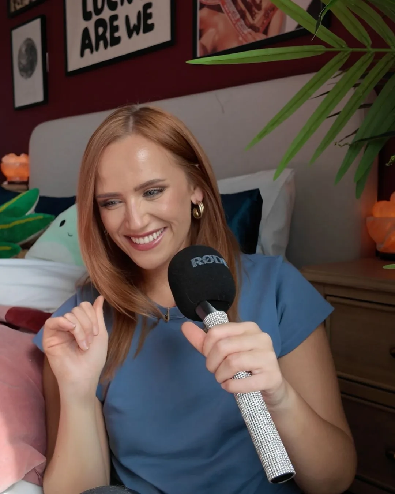

There's a folder of takes on your phone you'll never post.
I'm Chloe. I help founders stop doing an impression of themselves on camera and start sounding like a person. You leave able to film it without me.

Coaching founders, consultants and agency owners across London and over Zoom.
Your videos aren't bad because of the lighting.
They're bad because you're performing a version of yourself you think you're supposed to be. Stiff, over-explained, three throat-clears before the point, vocabulary you'd never use out loud.
Better gear won't fix that. Neither will a nicer edit. The camera isn't the problem, and it never was. I work on the person, not the footage.
Almost everyone is stuck in one of three places
Before we fix anything, we work out which one is yours.
The writing
You sit down to script it and out comes a press release. Every sentence reads like it's been through legal. You've said nothing and it took ninety seconds.
Fix: we write one together, live, side by side, so you can see how it's built.
The nerves
You know exactly what you want to say right up until the light goes red. Then it's take seventeen, and take seventeen is worse than take one.
Fix: delivery coaching, then a shoot day where I'm in the room and we get you over it.
The performance
The words are fine. You just sound like you're reading them, because you are. Flat pace, no eye line, energy that dies in the second sentence.
Fix: pacing, eye line, and cutting everything before the actual point.
How it runs
Four steps, and you can stop at any of them.
We find out where it's breaking
A free 30-minute call. You tell me what you've tried, I tell you honestly whether it's the writing, the nerves or the performance. No pitch deck.
Everything after this is built on what we find here, not on a fixed curriculum.
We write it together
A live session where we build the script side by side. I'll also just review something you've already written and tell you straight what isn't working, but writing it together is where you actually learn the method.
The point isn't one good script. It's that you can write the next one alone.
We work on how you say it
Pacing, eye line, energy, and cutting the throat-clearing. How to sound like someone talking rather than someone reciting. Done over video, repeatable at home.
This is the part most people skip and then wonder why the good script died on camera.
I come to you and we shoot it
A day in your space. I direct, coach you through takes and get you over the wall in real time. Most people's whole relationship with the camera changes on this day.
You film in the setup you'll keep using, so nothing falls apart when I leave.
The goal is that you stop needing me.
Most people selling this quietly want you dependent. A retainer, a shoot every month, a folder you can't open without them.
I'd rather you finished able to write it, shoot it and post it on a Tuesday afternoon on your own, with nobody's permission. That's what coaching is supposed to mean, and it's a better promise than "I'll make your videos."
Proof
What people say after the shoot day.
Placeholder. Best testimonials are short, specific and mention the before state. Ask for one sentence, not a paragraph.Name, role, company
Placeholder. Ideally one of these is from someone who now posts weekly without help.Name, role, company
Placeholder. Add a headshot to each of these once you have them.Name, role, company
Bring the folder of takes.
Thirty minutes, free, no preparation. Show me the worst one. I'll tell you what's actually going wrong and whether I can help.
Or email hey@chloebarrettcoaching.co.uk if that's easier.